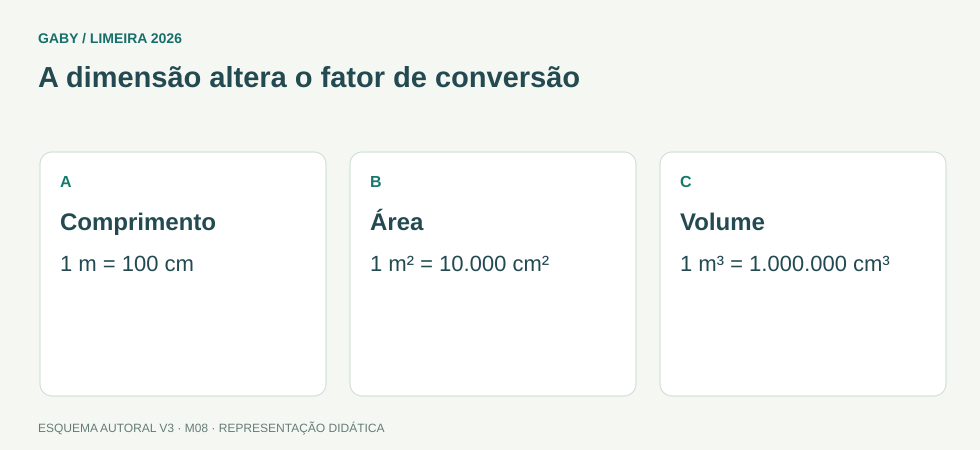

Como acompanhar esta aula
Comece pelos desenhos e pelos exemplos. Depois leia a fórmula e explique cada passo com suas palavras. Os esquemas visuais originais continuam disponíveis; as correções agora explicam as etapas.
Revisão didática para iniciantes. Questões autorais do projeto [Gaby], com duas correções editoriais de alternativas nos módulos M05 e M07. Não constitui nova auditoria do edital.
Objetivos do módulo
- Converter unidades usuais.
- Distinguir conversões lineares, quadradas e cúbicas.
- Resolver problemas com capacidade, massa e tempo.
A dimensão altera o fator de conversão

Descrição em texto do esquema
- Comprimento: 1 m = 100 cm
- Área: 1 m² = 10.000 cm²
- Volume: 1 m³ = 1.000.000 cm³
Oficina visual · aplique o esquema
Converta 2,5 m² em cm² e 3 litros em cm³.
Atividade autoral complementar da V3. Registre sua resposta; a resolução está no arquivo de gabarito e revisão.
Mapa do conteúdo
1. Comprimento: o objeto não muda de tamanho
Um metro e cem centímetros são o mesmo comprimento. Uma unidade menor exige mais unidades para medir o mesmo objeto.
Entenda cada passo
- Escada → km, hm, dam, m, dm, cm, mm
- Para a direita → multiplique por 10 a cada passo
- m para cm: dois passos → 2 × 10 × 10 = 200 cm
- cm para m: volte dividindo → 200 ÷ 100 = 2 m
2. Área e volume multiplicam mais dimensões
Área mede duas dimensões; volume, três. Por isso não podemos usar o mesmo fator linear sem elevar ao quadrado ou ao cubo.
Entenda cada passo
- Quadrado de 1 m por 1 m → 100 cm por 100 cm
- Área → 100 × 100 = 10.000 cm²
- Cubo de 1 m por 1 m por 1 m → 10 dm em cada direção
- Volume → 10 × 10 × 10 = 1.000 dm³ = 1.000 L
3. Tempo e capacidade: veja a relação certa
Hora usa sessenta minutos, não cem. Litro usa mil mililitros. Dividir ou multiplicar depende de ir para uma unidade maior ou menor.
Entenda cada passo
- 2 horas → 2 × 60 = 120 min
- 2h30min → 120 + 30 = 150 min
- 90 min → 90 ÷ 60 = 1,5 h = 1h30min
- 500 mL → 500 ÷ 1.000 = 0,5 L
Fórmula em duas formas: conversão de área
Em linha: 1 m² = 100 × 100 cm² = 10.000 cm²
As duas escritas descrevem a mesma conta. Use o formato que ajudar a entender cada operação.
Sua vez: tente antes de abrir
Converta 1h45min para minutos e depois para horas decimais.
Conferir o raciocínio da atividade
- Uma hora vale 60 min.
- Some 45: 105 min.
- 105 ÷ 60 = 1,75 h. Não é 1,45 h.
Refaça no papel. Se errou, descubra em qual passo antes de seguir para as dez questões.
Pegadinhas e erros frequentes
- Usar ×10 em área.
- Usar base100 para horas.
- Confundir litro e metro cúbico.
Resumo depois de entender os exemplos
- unidade menor: multiplicar; maior: dividir; comprimento usa fator 10 por passo
- fator de área = fator linear²; fator de volume = fator linear³
- minutos = horas × 60; horas = minutos ÷ 60; litros = mililitros ÷ 1.000
Exercícios do módulo
Tente primeiro sem consulta. Depois use “Ver resposta e resolução” abaixo da questão; clique novamente para recolher. O gabarito separado continua disponível.
Resolva sem consultar o arquivo de gabarito. As questões são autorais e construídas para treinar os conceitos do edital.
- 20cm
- 2000cm
- 0,2cm
- 200cm
Fonte: IMPA/OBMEP — Portal da Matemática, módulos.
Ver resposta e resolução — questão 1
Resposta: alternativa D
Leia o pedido e acompanhe o raciocínio:
- 1 m = 100 cm.
- Multiplique 2 por 100.
- 2 m = 200 cm; unidade menor pede mais unidades.
Confira: refaça a operação final, verifique as unidades e compare com o que foi pedido.
- 30g
- 0,3g
- 3000g
- 300g
Fonte: IMPA/OBMEP — Portal da Matemática, módulos.
Ver resposta e resolução — questão 2
Resposta: alternativa C
Leia o pedido e acompanhe o raciocínio:
- 1 kg = 1.000 g.
- Multiplique 3 por 1.000.
- 3 kg = 3.000 g, o mesmo peso em outra unidade.
Confira: refaça a operação final, verifique as unidades e compare com o que foi pedido.
- 90min
- 150min
- 230min
- 130min
Fonte: IMPA/OBMEP — Portal da Matemática, módulos.
Ver resposta e resolução — questão 3
Resposta: alternativa B
Leia o pedido e acompanhe o raciocínio:
- Uma hora tem 60 minutos.
- Duas horas: 2 × 60 = 120 min.
- Some 30: 150 min; não trate horas como base 100.
Confira: refaça a operação final, verifique as unidades e compare com o que foi pedido.
- 100cm²
- 10.000cm²
- 1000cm²
- 1cm²
Fonte: IMPA/OBMEP — Portal da Matemática, módulos.
Ver resposta e resolução — questão 4
Resposta: alternativa B
Leia o pedido e acompanhe o raciocínio:
- Um quadrado de 1 m tem lados de 100 cm.
- Área em cm²: 100 × 100.
- 1 m² = 10.000 cm², pois mudaram duas dimensões.
Confira: refaça a operação final, verifique as unidades e compare com o que foi pedido.
- 1m³
- 100cm³
- 1km³
- 1dm³
Fonte: IMPA/OBMEP — Portal da Matemática, módulos.
Ver resposta e resolução — questão 5
Resposta: alternativa D
Leia o pedido e acompanhe o raciocínio:
- Um cubo de 1 dm por 1 dm por 1 dm tem 1 dm³.
- Esse volume equivale a 1 litro.
- Logo 1 L = 1 dm³; 1 m³ é muito maior.
Confira: refaça a operação final, verifique as unidades e compare com o que foi pedido.
- 50L
- 0,05L
- 0,5L
- 5L
Fonte: IMPA/OBMEP — Portal da Matemática, módulos.
Ver resposta e resolução — questão 6
Resposta: alternativa C
Leia o pedido e acompanhe o raciocínio:
- 1 L = 1.000 mL.
- Converta para unidade maior dividindo: 500 ÷ 1.000.
- Resultado 0,5 L, metade de um litro.
Confira: refaça a operação final, verifique as unidades e compare com o que foi pedido.
- 25000m
- 2500m
- 250m
- 25m
Fonte: IMPA/OBMEP — Portal da Matemática, módulos.
Ver resposta e resolução — questão 7
Resposta: alternativa B
Leia o pedido e acompanhe o raciocínio:
- 1 km = 1.000 m.
- Multiplique 2,5 por 1.000.
- 2,5 km = 2.500 m; são três passos métricos.
Confira: refaça a operação final, verifique as unidades e compare com o que foi pedido.
- 1,5h
- 0,9h
- 1,9h
- 90h
Fonte: IMPA/OBMEP — Portal da Matemática, módulos.
Ver resposta e resolução — questão 8
Resposta: alternativa A
Leia o pedido e acompanhe o raciocínio:
- Uma hora tem 60 minutos.
- 90 ÷ 60 = 1,5 h.
- A meia hora é 30 min: 1,5 h = 1h30min, não 1h50min.
Confira: refaça a operação final, verifique as unidades e compare com o que foi pedido.
- 1L
- 100L
- 10L
- 1000L
Fonte: IMPA/OBMEP — Portal da Matemática, módulos.
Ver resposta e resolução — questão 9
Resposta: alternativa D
Leia o pedido e acompanhe o raciocínio:
- 1 m = 10 dm, em cada uma das três dimensões.
- 1 m³ = 10 × 10 × 10 = 1.000 dm³.
- Como 1 dm³ = 1 L, temos 1.000 L.
Confira: refaça a operação final, verifique as unidades e compare com o que foi pedido.
- litro interfere
- tempo é base60
- unidade está elevada ao quadrado
- metro muda definição
Fonte: IMPA/OBMEP — Portal da Matemática, módulos.
Ver resposta e resolução — questão 10
Resposta: alternativa C
Leia o pedido e acompanhe o raciocínio:
- Área multiplica duas medidas de comprimento.
- Se cada medida muda por fator k, a área muda por k × k.
- O fator é k²; de m para cm, 100² = 10.000.
Confira: refaça a operação final, verifique as unidades e compare com o que foi pedido.
Quando terminar, abra Matemática 08 - Sistemas de Medidas - Gabarito e Revisão.
Checklist de domínio
- ☐ Converter unidades usuais.
- ☐ Distinguir conversões lineares, quadradas e cúbicas.
- ☐ Resolver problemas com capacidade, massa e tempo.
Meta do módulo: 80% ou mais nas questões, sem depender de consulta.
Referências e conteúdos auxiliares
- IMPA/OBMEP — Portal da Matemática, módulosVideoaulas, exercícios e materiais por tema. Localize o assunto indicado no roteiro complementar do módulo.
Referências externas de apoio consultadas para a V3 em 27/09/2026. A origem das questões é o material autoral do projeto; estes links não indicam que uma instituição publicou ou validou os exercícios. As páginas externas precisam de internet. Em informática, confira a versão do programa; em legislação, observe o recorte e as regras de atualização do edital.